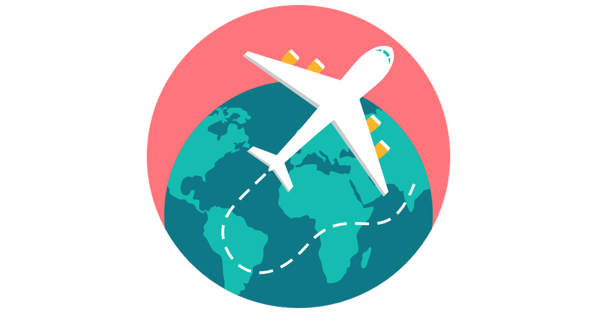

Dalam Negri
Melakukan Social Distancing
Social Distancing adalah meminimalisir
kontak langsung antar-manusia atau menjaga jarak tertentu. Tujuannya adalah mengurangi
penularan virus karena terpapar droplet
Ini salah satu cara yang diyakini efektif mencegah lonjakan penyebaran virus. Salah
satunya ketika terjadi pandemi influenza Spanyol 1918.
Apa saja bentuk social distancing ?
Dilakukan individu
- Menjauhi keramaian atau pertemuan massal.
- Menjaga jarak dengan orang lain 1-2 meter.
- Tidak berjabat tangan, bergandengan, atau berpelukan.
- Mengurangi frekuensi ke toko. Pergi hanya saat mendesak.
Dilakukan perusahaan
- Memberlakukan kerja dari rumah, terutama bagi yang memiliki risiko tinggi terkena virus corona.
- Membatasi jumlah peserta rapat.
- Tidak mengadakan kegiatan massal terutama di ruangan tertutup.
Dilakukan pemerintah
- Memberlakukan belajar jarak jauh untuk sekolah.
- Menutup ruang publik seperti tempat wisata.
- Menunda event-event besar.
- Mendorong perusahaan memberlakukan kerja jarak jauh.
Apakah saya harus benar-benar mengurung diri di rumah ?
Perubahan yang terlampau ekstrem bisa memicu stres dan disorientasi .
Jika Anda merasa tertekan di rumah, pilihlah kegiatan yang minim kontak dengan orang lain, seperti berjalan, berlari, atau bersepeda. Anda juga bisa bersosialisasi dalam jumlah minim dengan tetap menjaga kebersihan tangan.
Berada di ruang terbuka juga lebih mengurangi risiko terinfeksi karena droplet (partikel air liur) akan jatuh ke tanah dan bukan pada benda.
Apa yang harus dilakukan di Tempat Umum/Transportasi Massal ?
Cuci tangan
atau gunakan hand sanitizer setelah menyentuh fasilitas publik.
Hindari
kerumunan yang membatasi ruang gerak.
Kurangi
kontak dengan pegangan atau pintu.
Waspada
meletakkan tas di lantai bus/kereta.
Bersihkan
Smartphone dengan alkohol setelah penggunaan di tempat umum.
Tidak ngemil
di transportasi umum untuk menghindari kontaminasi dari tangan.

Luar Negri
Perlukah membatasi perjalanan ke Luar Negeri ?
WHO menyatakan tidak akan mengeluarkan imbauan bepergian karena merupakan kewenangan masing-masing negara. Anda yang bepergian ke luar negeri diimbau memantau status negara tujuan di aplikasi Safe Travel.
Bagi lansia, penderita penyakit kronis, atau yang sedang tidak fit, hindari bepergian ke daerah terdampak.
Apa yang harus diwaspadai jika ke Luar Negeri ?
Unduh aplikasi Safe Travel dari Kementerian Luar Negeri Indonesia.
Simpan nomor KBRI di negara tujuan.

Baca informasi resmi kondisi terkini di negara tujuan.
Vaksin jika diperlukan sebelum berangkat.
Jaga kondisi tubuh dan kebersihan selama di perjalanan.
Sepulang ke Indonesia, pantau kondisi tubuh sendiri selama 14 hari.